University of Peradeniya — Third Year Project
PathFinder
Intelligent Assistive Navigation and Safety System
PathFinder is a portable smart assistance system designed to improve the safety, independence, and situational awareness of visually impaired users through computer vision, location tracking, emergency communication, and connected guardian support.
Road-Crossing Assistance
GPS Live Tracking
Emergency SOS Alerts
These values summarize project highlights and should be updated after final verification.
01 / Problem
Challenges Faced by Visually Impaired Travellers
Independent navigation can involve difficulty identifying obstacles, judging traffic conditions, communicating emergencies, and keeping guardians informed.
Obstacle Awareness
Unexpected obstacles, uneven surfaces, and environmental hazards may be difficult to identify early.
Road-Crossing Safety
Judging vehicle movement and selecting an appropriate time to cross can be challenging.
Emergency Communication
In urgent situations, users need a simple and immediate way to alert a trusted guardian.
Remote Guardian Awareness
Guardians may need access to location, alerts, and device status without constantly contacting the user.
PathFinder aims to combine environmental awareness, connected safety services, and guardian support within one portable assistive system.
The prototype is designed to support existing mobility tools and human judgement, not replace white canes, guide dogs, traffic signals, mobility training, guardians, or specialist assistance.
02 / Solution
One Integrated Assistive Platform
PathFinder combines local sensing, computer-vision processing, audio guidance, cloud synchronization, and guardian-side monitoring in a portable prototype.
Camera-Based Environmental Detection
The Raspberry Pi processes camera input to identify relevant objects and possible hazards around the user.
Pedestrian Navigation Assistance
Pedestrian mode provides assistive audio feedback for normal walking scenarios based on available visual information.
Road-Crossing Assistance
Road-crossing mode evaluates visible road activity and provides cautionary decision support rather than a guarantee of safety.
GPS and Live Location Tracking
Latest available GPS information is synchronized with Firebase so guardians can monitor location when connectivity is available.
Emergency SOS Communication
A physical SOS action can create an emergency event and notify the guardian application with available location and device details.
Safe-Zone and Device Monitoring
Safe-zone events, battery status, tracking information, and alert records are delivered to the Flutter guardian application.
Camera, GPS, power, and user-input data are collected by the portable device.
Local Python logic evaluates images, coordinates, device state, and mode-specific conditions.
Structured updates are synchronized through Firebase when Wi-Fi or mobile data is available.
Guardians receive SOS, safe-zone, tracking, and device-status information through the app.
Audio output provides assistive guidance and status feedback to the user.
03 / Architecture
End-to-End System Architecture
The prototype connects a Raspberry Pi-based portable device with Firebase services and a Flutter guardian mobile application.
Device Layer
- Raspberry Pi
- Camera module
- GPS module
- SOS button
- Battery monitoring
- Speaker
- 4G or Wi-Fi connectivity
Processing Layer
- Image capture
- Object detection
- Pedestrian mode logic
- Road-crossing mode logic
- GPS validation
- Battery status calculation
- Alert generation
- Local audio output
Cloud Layer
- Firebase Authentication
- Cloud Firestore
- Firebase Cloud Messaging
- Device and user data synchronization
- Alert records
Exact service usage should be verified against the final implementation.
Application Layer
- Flutter guardian mobile application
- Live tracking
- SOS alerts
- Safe-zone monitoring
- Battery and device status
- Alert history
- Camera feed access
System Data Flow
Sensor data, visual input, cloud updates, and guardian actions are organized into a connected assistive workflow.
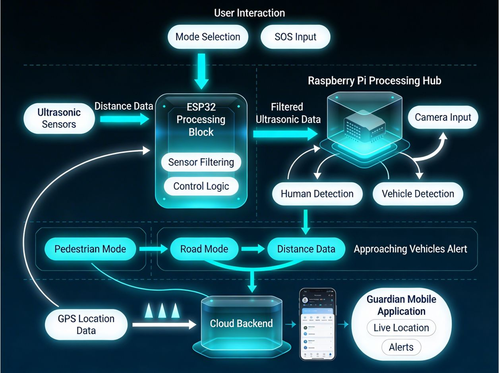
- Sensors and Camera
- Raspberry Pi Processing
- Internet Connection
- Firebase Services
- Flutter Mobile Application
- Guardian Action
Core Operating Modes
Each mode is designed for a specific assistive context and should be validated carefully before real-world use.
Pedestrian Mode
- Captures camera frames
- Detects relevant surroundings
- Identifies possible obstacles
- Produces audio warnings or guidance
- Supports normal pedestrian movement
Road-Crossing Mode
- Observes road activity
- Detects vehicles and relevant road objects
- Evaluates available visual information
- Produces cautionary audio guidance
- Remains an assistive feature rather than a guarantee of safe crossing
Emergency Mode
- Physical SOS button activation
- Emergency status update
- Guardian notification
- Location display
- Fast access to tracking and available device information
04 / Hardware
Portable Device Hardware
The device integrates computing, sensing, communication, audio output, physical controls, and portable power into a wearable or handheld assistive prototype.
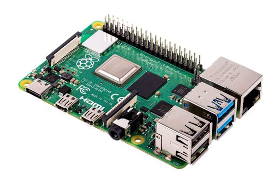
Raspberry Pi
Role: Main controller and local processing platform.
- Runs Python applications
- Processes camera frames
- Handles sensor input
- Communicates with Firebase
- Runs background services
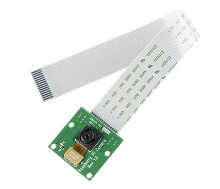
Camera Module
Role: Captures the environment for visual processing.
- Supplies frames to pedestrian mode
- Supplies frames to road-crossing mode
- Supports live camera viewing where available
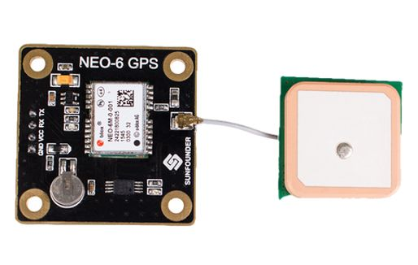
GPS Module
Role: Provides location information.
- User location tracking
- Safe-zone calculations
- Emergency location sharing
- Route and movement monitoring
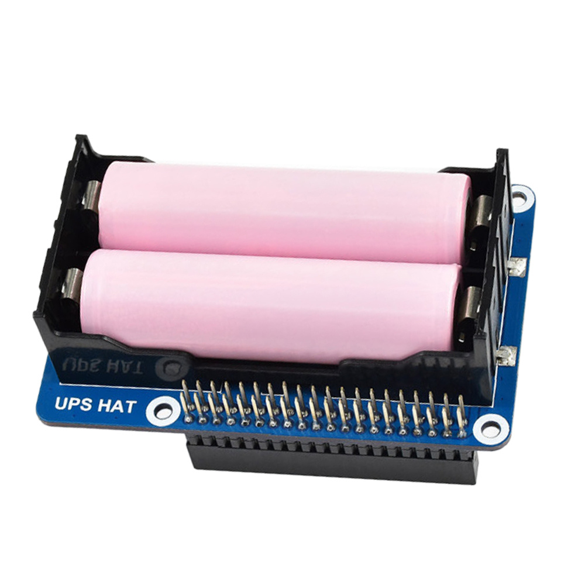
Battery and INA219 Monitoring
Role: Measures and estimates device power status.
- Voltage reading
- Current reading
- Power monitoring
- Battery percentage conversion
- Battery status classification
Speaker and Audio Output
Role: Provides audible instructions and warnings.
- Obstacle warnings
- Road-mode feedback
- System status notifications
- Emergency or error feedback
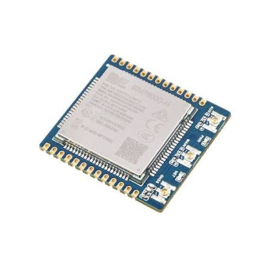
4G or Wi-Fi Connectivity
Role: Connects the portable device to cloud services.
- Firebase data synchronization
- GPS updates
- Alert delivery
- Remote monitoring
- Camera-stream access where network conditions allow
The final device combines computing, sensing, communication, audio output, user controls, and portable power inside a protective enclosure.
05 / Software
Software, Cloud, and Connectivity
PathFinder uses embedded software, computer vision, Firebase-backed synchronization, and a Flutter mobile application to connect the user and guardian.
Raspberry Pi Software
Python
OpenCV
YOLO-based object detection
Firebase Admin SDK
Flask or local streaming service
Multithreading
systemd service execution
Mobile Application
Flutter
Dart
Firebase Authentication
Cloud Firestore
Firebase Cloud Messaging
Maps and location display
Device monitoring
Alert handling
Cloud Services
User authentication
Device records
Live status updates
Alert storage
Location synchronization
Notification delivery
Networking
The device connects through Wi-Fi or mobile data. Small structured status and location updates are synchronized through Firebase.
Camera streaming may use a direct streaming endpoint instead of storing video frames in Firestore. Network availability and upload speed affect real-time performance.
Portable Device
Wi-Fi or Mobile Data
Firebase Services
Guardian App
06 / Mobile App
Guardian Monitoring Application
The Flutter application gives registered guardians access to safety alerts, latest available location data, safe-zone status, battery information, and camera feed access when supported by the device and network.
Login
Secure access for registered guardians.
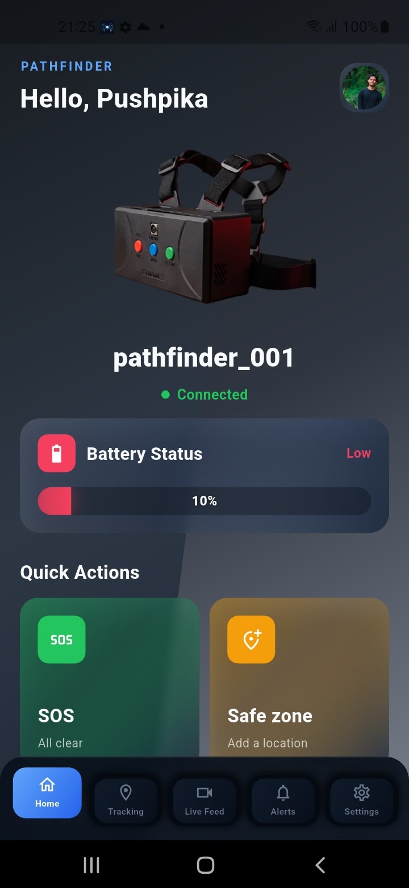
Home Dashboard
Displays registered devices, status information, and access to major safety features.
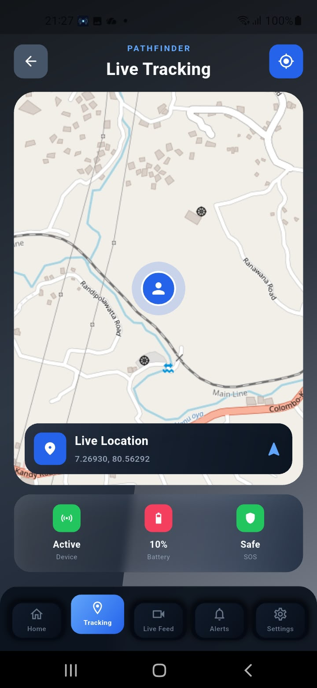
Live Tracking
Displays the latest available location of the PathFinder device.
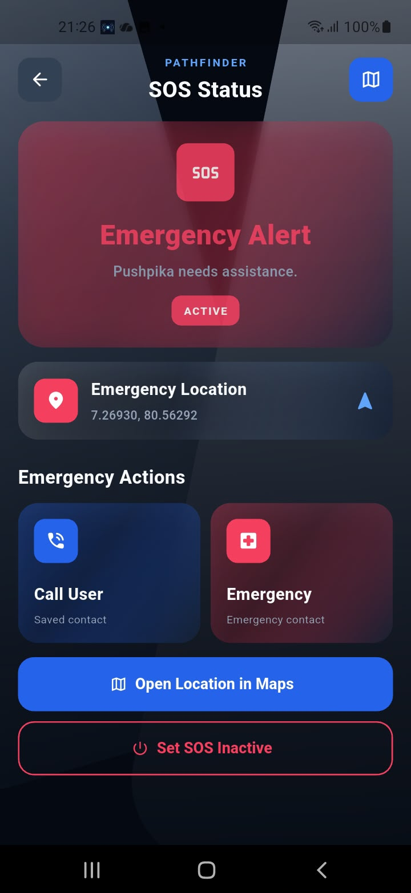
SOS Alert
Highlights emergency events and provides quick access to tracking information.
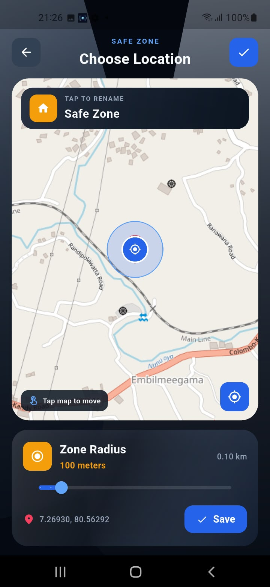
Safe-Zone Management
Allows the guardian to define and monitor a permitted geographic area.
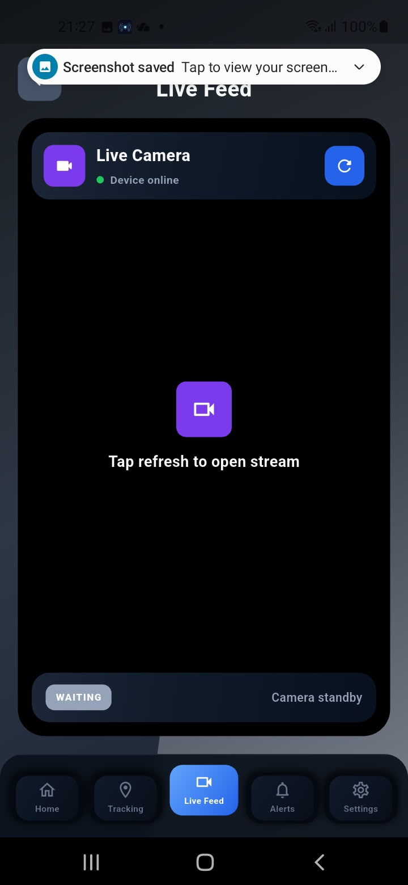
Camera Feed
Provides access to the device camera stream when the device and network are available.
07 / Testing
Testing and Validation
PathFinder is validated at function, module, integration, hardware, and controlled-environment levels. Final claims should be updated only after verified testing evidence is available.
Unit Testing
Functions such as voltage_to_percent(), get_status(), is_valid_gps_coordinate(), and is_inside_safe_zone() are candidates for focused tests.
Coverage should include equivalence partitioning, boundary-value analysis, valid input testing, invalid input testing, negative values, and null or unsupported values where applicable.
Pytest can support Raspberry Pi-side Python logic, while Flutter test tools can support mobile-side logic.
Integration Testing
- Raspberry Pi to Firebase communication
- GPS data displayed in the application
- SOS button to guardian alert flow
- Battery data synchronization
- Safe-zone event detection
- Camera-stream access
- Automatic service startup after boot
Hardware Testing
- Camera stability
- GPS acquisition and accuracy
- Speaker clarity
- SOS-button response
- Battery monitoring
- Network reconnection
- Device temperature
- Long-running operation
Controlled Field Testing
The integrated prototype has been tested in controlled environments. Further real-world validation is required for pedestrian navigation and road-crossing assistance under different traffic, lighting, weather, environmental, and network conditions.
Testing Status
Editable placeholder statuses for final validation reporting.
| Test Area | Current Status | Notes |
|---|---|---|
| Unit tests | Completed | Replace with verified function-level coverage notes. |
| Firebase integration | In Progress | Replace with final sync and notification observations. |
| Hardware endurance | In Progress | Replace with long-running test duration and device behavior. |
| Controlled field testing | Planned | Replace with approved controlled-testing outcomes. |
08 / Budget
Estimated Project Budget
All budget values below are placeholders and must be replaced with the final verified project budget.
| Category | Example Components | Quantity | Estimated Cost | Status |
|---|---|---|---|---|
| Processing and Controller | Raspberry Pi, storage, cooling | Replace | LKR 00,000 | Placeholder |
| Camera and Sensors | Camera module, GPS module, monitoring sensors | Replace | LKR 00,000 | Placeholder |
| Communication Modules | 4G module, antenna, connectivity accessories | Replace | LKR 00,000 | Placeholder |
| Power System | Battery, charging module, power regulation | Replace | LKR 00,000 | Placeholder |
| Audio and User Controls | Speaker, SOS button, mode controls | Replace | LKR 00,000 | Placeholder |
| Enclosure and Mechanical Parts | Protective case, mounting parts, fasteners | Replace | LKR 00,000 | Placeholder |
| Wiring and Accessories | Cables, connectors, prototyping material | Replace | LKR 00,000 | Placeholder |
| Estimated Total: Replace with final verified total | ||||
09 / Timeline
Project Development Timeline
Replace each date placeholder after final project documentation is confirmed.
Milestone 1
Problem identification and project proposal
Milestone 2
Initial hardware, software, and interface development
Milestone 3
Integrated working prototype
Milestone 4
Testing, refinement, documentation, and final product
10 / Gallery
Development Journey
These local SVG placeholders should be replaced with real photographs from hardware assembly, testing, app development, and prototype validation.
Project Outcomes
Project Achievements
Integrated portable assistive prototype
Camera-based environmental processing
Pedestrian support mode
Road-crossing support mode
GPS tracking
Safe-zone monitoring
Emergency SOS communication
Guardian mobile application
Firebase integration
Battery and device-status monitoring
Background service execution on device boot
Future Development
Future Development
11 / Team
Meet the PathFinder Team
Replace the placeholders below with verified team, supervisor, and contact details before final publication.
K. T. Sasindu
E/21/361
Replace with contribution
Rusiru Gunaratne
E/21/157
Replace with contribution
Pushpika Anuradha
E/21/442
Replace with contribution
Dinira Francisco
E/21/141
Replace with contribution
Supervisor
Ms. Yasodha Vimukthi
Lecturer (Prob)
Department of Computer Engineering
University of Peradeniya
Faculty of Engineering
University of Peradeniya
Sri Lanka